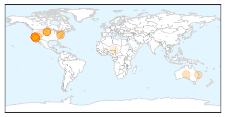
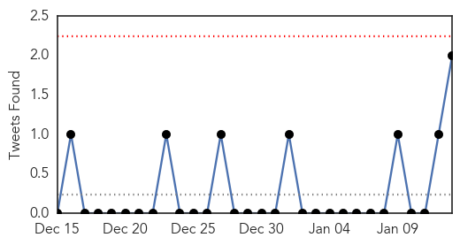
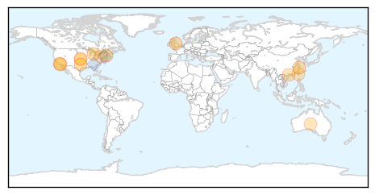

Measles
30-Day Web Trend
5 alerts, 3 warnings

30-Day Twitter Trend
0 alerts, 0 warnings

Article Locations
Article Confidences

Top Articles:
- 0.988
- Several in El Paso County quarantined due to measles exposure
- 0.986
- While recent reports of possible measles in Wayne proved unfounded, disease remains a danger
- 0.981
- More cases of measles linked to Disney theme parks
- 0.979
- Disneyland measles cases raise health concerns
- 0.968
- California confirms 26 measles cases linked to Disneyland
- 0.964
- Number of measles cases in outbreak linked to California Disney themes parks jumps to 26
- 0.963
- California Measles Outbreak Linked To Disneyland
- 0.956
- Disneyland measles outbreak: Infected man took 2 flights before diagnosis
- 0.956
- Disneyland measles outbreak: Infected man took 2 flights before diagnosis
- 0.953
- New Measles Case Confirmed in San Diego County
- 0.928
- 1,000 free measles shots available Friday
- 0.927
- UPDATE: Measles Cases Linked To Disney Theme Parks Spread
- 0.925
- Health Department schedules measles vaccination clinic In Mitchell
- 0.919
- Disneyland measles outbreak spreads to 22 cases statewide
- 0.918
- Measles cases linked to Disneyland leap to double digits
- 0.908
- Northern Voices Online California measles outbreak has its ‘genesis’ in Disneyland
- 0.892
- Health Officials Distributing Measles Vaccines In Mitchell
- 0.885
- Measles alert for Brisbane's southside
- 0.879
- Shopper sparks measles outbreak fears
- 0.849
- Disneyland Measles Outbreak Spreads in Four States
- 0.822
- 26 measles cases linked to Disneyland outbreak
- 0.768
- Disney measles outbreak reaches 26 cases in four states
- 0.758
- South Dakota hosting measles vaccination clinic following outbreak
- 0.620
- 26 measles cases reported with ties to Disney theme parks in US
- 0.606
- 26 measles cases in 4 states now reported with ties to Disney theme parks
- 0.596
- 26 measles cases reported with ties to Disney theme parks
- 0.587
- 26 measles cases reported with ties to Disney theme parks
- 0.587
- 26 measles cases reported with ties to Disney theme parks
- 0.544
- 26 measles cases reported with ties to Disney theme parks
- 0.514
- Measles outbreak tied to visits to Disney theme parks in Califor - KULR8.com
- 0.514
- Measles outbreak tied to visits to Disney theme parks in Califor
- 0.503
- Niger: Massive food-aid project for people fleeing conflict in Nigeria
Top Tweets:
-
No tweets found for Jan 13, 2015
Influenza
30-Day Web Trend
1 alerts, 0 warnings

30-Day Twitter Trend
0 alerts, 0 warnings

Article Locations
Article Confidences
Top Articles:
- 0.999
- The Marysville Advocate: News
- 0.999
- Weld County sees declining flu cases per week despite widespread status
- 0.995
- On-going fight against flu bug - IronMountainDailyNews.com
- 0.991
- Flu claims first life in New Brunswick
- 0.991
- Flu Widespread in Rhode Island, Vaccine 'Bad Match' for the...
- 0.987
- Flu Scan for Jan 13, 2015
- 0.982
- Concerns remain as flu cases decline in North Texas
- 0.980
- Hospital visits restricted to help to stop the flu
- 0.963
- Researchers say universal flu vaccine isn't far off
- 0.826
- Two hospitalized with H7N9 ...｜Society｜WCT
- 0.788
- COA tightens culling rules as flus spread
- 0.777
- SA launches pharmacy flu shot scheme
- 0.766
- Mayo expert describes warning signs of severe sepsis, septic shock
- 0.731
- Local news about Berks County and Reading, Pa.: Health
- 0.545
- Testing begins on HIV vaccine in pill form
Top Tweets:
- 0.752
- Joining us from CDC is Dr. Fiona Havers, flu expert and Medical Officer in the Influenza Division abcDRBchat
- 0.712
- RT: Joining us from CDC is Dr. Fiona Havers, flu expert and Medical Officer in the Influenza Division abcDRBchat
- 0.709
- U.S. flu activity remains high; CDC recommends antivirals to treat influenza IN VERY SICK AND HIGH RISK PATIENTS http://t.co/aUgDez7fCv